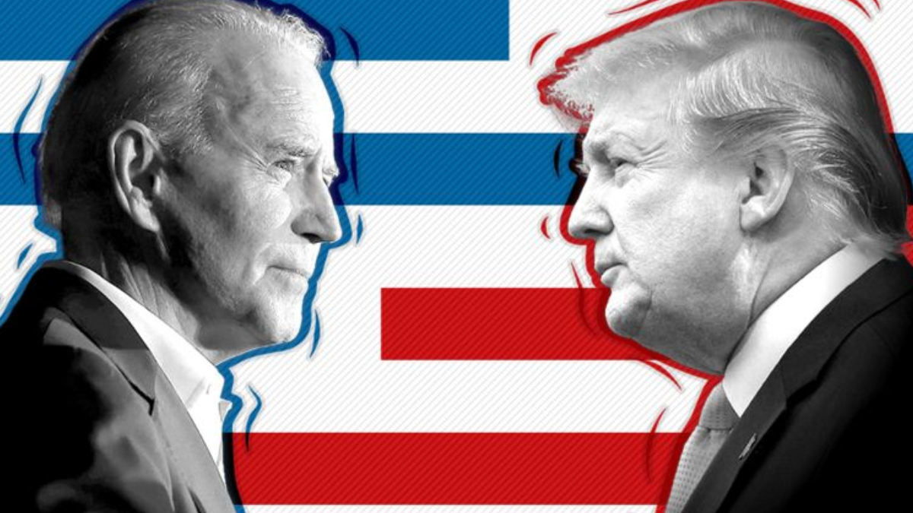

El largo camino a la casa blanca
por Alejandra Morales, directora de MERAKI
Mientras seguimos día a día el desenlace de la carrera a la casa blanca, considero que ni siquiera la imaginación más audaz de cualquier escritor, o los intrépidos periodistas de los medios de comunicación y especialistas en política consiguieron anticiparse o llegar a vislumbrar todos los sobresaltos y acontecimientos que acompañaron la campaña electoral de Estados Unidos 2020.
Hace unos veinte días, el 29 de septiembre, fue el primer debate entre Trump, el actual presidente de Estados Unidos que busca la reelección y Joe Biden, su adversario, reconocido por haber sido durante 8 años el vicepresidente de Obama y por poseer una carrera política de 30 años en el senado. Un perfil totalmente opuesto al del actual presidente. Si bien durante el debate, hubieron diferentes interpretaciones y opiniones sobre cómo se desarrolló, desde la óptica de la comunicación política, podemos asegurar que Trump se mantuvo fiel a su estilo; disruptivo, exabrupto y llevando el debate a puntos en donde el moderador no encontraba la forma de moderar.
Por otro lado, Biden, a pesar de las continuas confrontación y provocaciones de Trump, se mantuvo firme - dentro de lo que se podía esperar de él- y le habló directo a sus votantes.
Y aquí destacamos como, entre las continuas provocaciones de Trump, varias veces hizo referencia a la vulnerabilidad de Biden y al hecho de estar siempre con su barbijo de un lugar a otro cuidándose. Quizás, en ese momento, era un mensaje que continuaba posicionándolo desde un lugar de fortaleza y poder; sin embargo, en la arena de la política, todo cambia en cuestión de segundos.
Debemos tener en cuenta que, tanto los mensajes que dan los políticos como las acciones que realizan, son importantes porque se deben encontrar en constante coherencia y sintonía con el relato que cada uno busca implementar en su campaña, a sabiendas de que, mantenerlos, no siempre es tarea fácil.
Por su parte, Trump, después de tanto tratar a Biden como un hombre demasiado frágil – sobre todo para manejar un país- incluso utilizando el apodo “Tío Biden”, al contraer el virus COVID-19 algunos días después de su encuentro, se ha posicionado en un escenario totalmente incierto, poniendo todas las miradas nuevamente sobre Estados Unidos y, principalmente, sobre su presidente.
Como nos explica Antoni Gutierrez Rubi en uno de sus artículos, “uno de los relatos de campaña de Trump es su fortaleza. Él es un líder fuerte, en contraposición al «viejo» Biden. Si supera sin más problemas la enfermedad puede ser usada a su favor para mostrar esa capacidad de liderazgo”.
Aunque no debemos olvidar que, a escasos días de los comicios generales, esa estrategia también podría colocarlo en una zona de vulnerabilidad, puesto que, si ya se le reclamaba que no fue capaz de cuidar a los ciudadanos que contrajeron el virus, ahora, ni siquiera, ha podido evitar contraerlo él mismo, poniendo en entredicho su discurso, que desde el inicio de la pandemia se caracterizó por minimizar su gravedad, mostrándose escéptico sobre sus consecuencias, aún cuando Estado Unidos tiene la cifra más alta de muertes en el mundo.
A pesar de todo lo que sucedió hasta ahora, el caso positivo de Trump, en un contexto de pandemia y crisis a nivel mundial no puede considerarse tan extraordinario.
No fue el primer presidente en contagiarse, ya pasaron por ese lugar el presidente Bolsonaro en Brasil, Boris Johnson primer ministro de Inglaterra y la lista continúa. Sin embargo, ninguno de ellos está a menos de 30 días de las elecciones. Lo que sí debería llamar nuestra atención, es cual puede llegar a ser su efecto frente a la contienda electoral puesto que, hasta ahora, las encuestas continúan posicionando a Biden por encima de Trump casi entre un 8% y 10% dependiendo de la consultora.
En este sentido, no podemos dejar de mencionar el gran spot, al estilo hollywood, del regreso de Trump a la Casa Blanca después de pasar unos días internados junto a su esposa para ver cómo evolucionan. Como analistas, y apasionados de la comunicación política, es inconcebible no señalar “el gran gesto” de Trump al sacarse el barbijo frente al balcón de la Casa Blanca. Como todos sabemos, la comunicación no solo es verbal. También los políticos transmiten sus mensajes con gestos, acciones, imágenes, e incluso la elección de lugares y vestimentas son de gran importancia porque al final de cuentas, todo está comunicando.
Y Trump, al colocarse frente a todos los medios y cámaras, subir las escalinatas y quitarse su barbijo, está transmitiendo un mensaje directo a la ciudadanía y sus rivales. “El virus no pudo conmigo, porque soy fuerte, porque no es tan grave y porque sigo teniendo el control”. Su mensaje fue potente desde el lugar que se lo analice, principalmente, porque va en consonancia con su estilo y posicionamiento frente a la pandemia.
Por otra parte, deberíamos recordar, como el primer ministro Boris Johnson, se contagió cuando en Inglaterra aún no consideraban que debían extremarse los cuidados frente a la pandemia. El premier británico mantenía un discurso de despreocupación que cambió notablemente al encontrarse entre la vida y la muerte durante unos días. Sin embargo, en este caso, la imagen del primer ministro mejoró puesto que, los ciudadanos, empatizaron con el momento que atravesaba.
En el caso de Trump, sucede al revés. Sus números continúan bajando, pero su electorado más duro si que estuvo conforme con su demostración de fuerza y superación.
Teniendo en cuenta el contexto de pandemia en todo el mundo, Estado Unidos, es el país con el mayor número de muertes, tras haber superado los 220.000 decesos. Asimismo, también su economía se vio afectada – recordemos que es uno de los puntos fuertes de la campaña de Trump- por lo que, no será fácil sostener este tema como fortaleza cuando la crisis sanitaria le dejó, el pasado abril, más de 22 millones de empleos perdidos que, de a poco, se han intentado recuperar en estos últimos meses.
Por otro lado, mirando un poco más atrás, no podemos olvidar las masivas y violentas protestas que tuvieron lugar hace unos meses con el caso Jorge Floyd, que llevó incluso a quemar comisarías e iglesias, en las que Trump, manteniendo su discurso de mano dura, llegó a amenazar con sacar el ejército a las calles.
Esto nos lleva a concluir que, en Estados Unidos la ciudadanía está revoltosa, cambiante y presente, y que será muy difícil poder anticipar cuál será su comportamiento electoral frente a las próximas semanas.
Lo que sí podemos afirmar es que al día de hoy, la encuestadora RealClearPolitics posiciona a Biden 8,9 puntos por encima de Trump, con un 51,3 de intención de voto frente al actual presidente, que posee un 42,4 a favor. Si bien, las encuestas son sólo una foto del momento, nos están dejando entrever una tendencia que será difícil de revertir.
Pero, no podemos olvidar que estamos hablando de Estados Unidos, con un sistema electoral tan especial que en 2016 Trump consiguió su victoria incluso cuando la mayoría de los encuestadores daban números en su contra.
Lo que nos lleva a afirmar que las elecciones de Estados Unidos se definirán el día D, es decir cuando los ciudadanos vayan a votar y elegir a su nuevo líder., por lo que sólo nos queda seguir el minuto a minuto para ver que otro suceso extraordinario acompañará esta contienda electoral que se desarrolló en medio de una pandemia mundial, con una crisis sanitaria, económica y política.